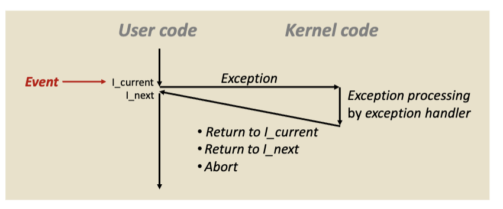
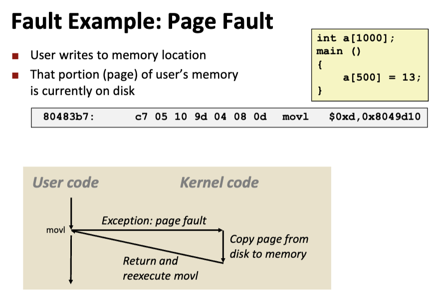
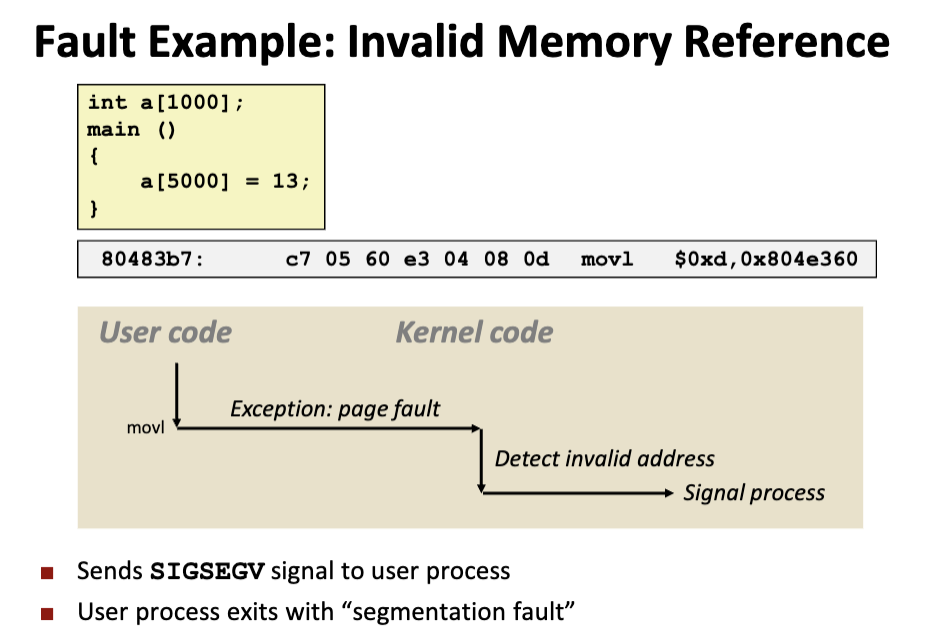
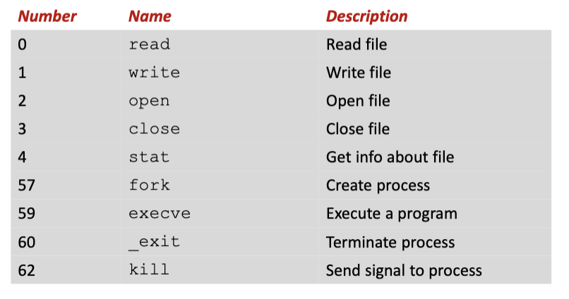
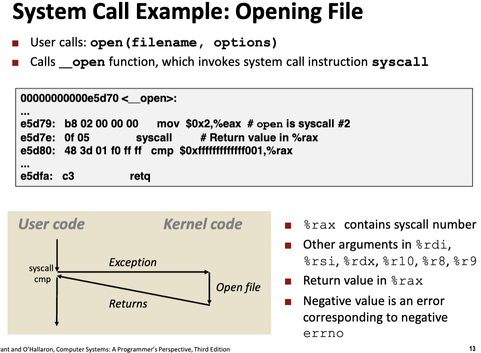

CSAPP 14-ecf-procs
正常来讲，程序计数器PC会在处理器运行时不断地读取指令序列的地址，两个指令间的过渡被称为控制转移，该指令序列被称为控制流，其中包含一些平滑的突变（即两条指令之间不相邻，如函数调用）；
异常是指指令地址在控制流中发生突变所做出的反应；系统通过对突变做出反应，将这种突变称为异常控制流ECF；
异常处理
1. 概述
当有事件发生时，会通过一个跳转表（被称为异常表，每个异常编号对应一个索引存储的条目的地址），进行一个间接过程的调用（异常），转移控制给异常处理程序，当异常处理程序处理完成后，根据异常的类型，有以下三种结果：
* 返回控制给\(I_{cur}\)；
* 返回控制给\(I_{next}\)；
* 终止被中断的程序；

异常控制使得控制从用户态转移到内核态，被压入内核栈中；
2. 异常类型
异常包含以下几种类型：
*
Interrupts中断（Asynchronous异步的，其余都是Synchronous同步的）；
* Traps陷阱；
* Faults故障；
* Aborts终止；
中断
由外部事件引起，并非专门的指令造成的，比如Timer interrupt（看门狗中断）、I/O interrupt；
陷阱
故意执行的异常，在用户程序和内核之间提供一个接口，称为系统调用System Calls；执行完后返回\(I_{next}\)继续执行；
故障
由错误情况引起，将控制转移给故障处理程序，比如缺页异常（可修复的）；执行完后返回\(I_{cur}\)继续执行或者终止；

以上例子中，当执行到该指令时，a[500]存放在磁盘中，需要从磁盘加载到内存中，此时触发故障，故障处理程序缺失的地址送到内存后，返回\(I_{cur}\)重新执行，此时能正确加载数据；

以上例子中，故障处理程序发现该地址是虚拟空间的无效地址，因此报段错误；
终止
Linux提供的系统调用
和异常表不是一个东西！！！

一个打开文件的例子，注意
%rax存放syscall
number，同时存放返回值，如果返回值小于0说明发生错误；
注意系统调用和函数调用的区别：
* 系统调用是在内核态中执行的；
本博客所有文章除特别声明外，均采用 CC BY-NC-SA 4.0 许可协议。转载请注明来源 YokumiのBlog！